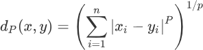
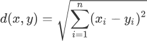
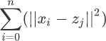
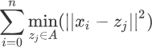

K-means聚类算法原理解析
通过《什么是Kmeans聚类算法》一节的学习，我们了解了 K-means 聚类算法的聚类过程，其实就是不断寻找簇的质心的过程，该过程从随机设定 K 个质心开始，直到找到 K 个最合适的质心为止。本节我们透过算法流程直击算法的本质，帮助您彻底理解 K-means 算法。
通过数学定义，我们将“质心”具象化，既然要使“距离的总和最小”，那么第一步就是确定如何度量距离，K-means 算法通过『欧几里得距离』来衡量质心与样本点之间的距离。前面在学习 KNN 算法时，我们介绍了『闵可夫斯基距离』，其公式如下：
上述式子中 "∑" 符号称为求和符号，与 sum 函数功能一致，闵氏距离是一组代数形式的公式，通过给 P 设定不同的值，就能用闵氏距离得到不同的距离表达式。当 P =1 时，可以得到曼哈顿街区距离（简称“曼哈顿距离”）；P = 2 时即可得到欧几里得距离，该公式常用于度量两点之间的直线距离，表达式和 L2 范式相同，如下所示：
举个简单的例子：如果第 j 个簇内有若干个数据点（比如 m 个），根据上述欧几里得距离公式就可以计算出簇中各个点到质心
K-means 算法是属于无监督学习算法，常用于解决聚类问题，通过给算法模型输入一个包含多种特征信息的样本点，会返回一个相应的类别编号（或称簇别），从而完成样本数据点的类别划分。
注意，判定聚类任务完成的终止条件并不是唯一的，常用方法有三个：
度量最小距离
对于 K-means 聚类算法而言，找到质心是一项既核心又重要的任务，找到质心才可以划分出距离质心最近样本点。从数学角度来讲就是让簇内样本点到达各自质心的距离总和最小。通过数学定义，我们将“质心”具象化，既然要使“距离的总和最小”，那么第一步就是确定如何度量距离，K-means 算法通过『欧几里得距离』来衡量质心与样本点之间的距离。前面在学习 KNN 算法时，我们介绍了『闵可夫斯基距离』，其公式如下：

上述式子中 "∑" 符号称为求和符号，与 sum 函数功能一致，闵氏距离是一组代数形式的公式，通过给 P 设定不同的值，就能用闵氏距离得到不同的距离表达式。当 P =1 时，可以得到曼哈顿街区距离（简称“曼哈顿距离”）；P = 2 时即可得到欧几里得距离，该公式常用于度量两点之间的直线距离，表达式和 L2 范式相同，如下所示：

举个简单的例子：如果第 j 个簇内有若干个数据点（比如 m 个），根据上述欧几里得距离公式就可以计算出簇中各个点到质心
z的距离总和，如下所示：

注意，上述公式中的 zj 是簇内所有样本点求均值的结果。
我们知道 K-measn 算法中会有 K 个簇，因此就要使每个簇内的数据点到质心的距离都可以达到最小，最终使得距离的总和最小。您可以这样理解，K 个簇共同组成了一个集合（这里定义为 A 集合），在 A 集合中每个簇的样本点到各自质心的距离都是最小的，因此可得如下表达式：

总结
上述内容，从数学的角度对 K-means 算法的原理进行了深入剖析，下面我们对 K-means 算法的流程进行回顾，可分以下四步：- 随机选取 K 个对象，并以它们为质心；
- 计算数据集样本点到质心的距离；
- 根据样本点距离质心的距离将其分簇（类），距离哪个近，划分到哪个簇（类）；
- 以簇内所有样本点的均值重新计算质心，，然后重复第二步，直到划分的簇（类）不在变化后停止。
K-means 算法是属于无监督学习算法，常用于解决聚类问题，通过给算法模型输入一个包含多种特征信息的样本点，会返回一个相应的类别编号（或称簇别），从而完成样本数据点的类别划分。
注意，判定聚类任务完成的终止条件并不是唯一的，常用方法有三个：
- 簇内数据点向质心靠拢、收敛，使得质心点不再发生明显的变化；
- 使用误差平方和（即 SSE）来衡量，当误差平和的值越小时，表示数据点越接近于他们的质心，聚类效果越好；
- 设定指定的定迭代次数，即最多选取几次质心点，不过这种方法，未必能达到最好的分类效果。
关注公众号「站长严长生」，在手机上阅读所有教程，随时随地都能学习。内含一款搜索神器，免费下载全网书籍和视频。

微信扫码关注公众号